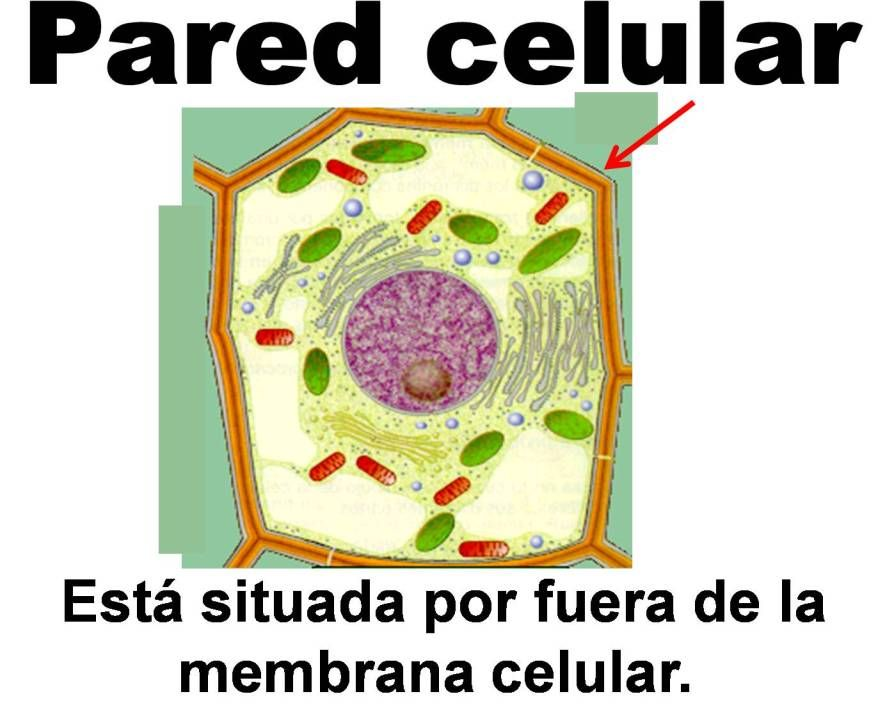
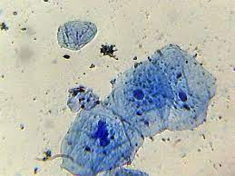

La célula es la unidad estructural y funcional de todos los seres vivos. Es la parte del ser vivo que realiza las tres funciones vitales de los seres vivos: nutrición, relación y reproducción.
Procariota
Las células procariotas están solamente presentes en el reino Moneras, por lo tanto, se tratan de bacterias, ya sean eubacterias o arquebacterias.
Características generales
Son células que rodeando a la membrana plasmática existe una pared de composición y estructura exclusiva de estos organismos. No poseen núcleos ni orgánulos membranosos. Son de pequeño tamaño (entre 0,5 y 1 u y longitud entre 2 y 10).
Componentes básicos
La membrana plasmática, que es una cubierta externa que separa el interior de la célula de su entorno.
El citoplasma, que se compone del citosol gelatinoso al interior de la célula y las estructuras celulares suspendidas en él.
El ADN, que es el material genético de la célula.
Los ribosomas, que son orgánulos moleculares que sintetizan proteínas.
Las células eucariotas son las células propias de los organismos eucariotas, las cuales se caracterizan por presentar siempre un citoplasma compartimentado por membranas lipídicas y un núcleo celular organizado.
Este núcleo celular está cubierto por una envoltura nuclear que contiene el ácido desoxirribonucleico o ADN, necesario para el desarrollo y funcionamiento del organismo. Las células eucariotas se distinguen así; de las células procariotas, que carecen de núcleo definido y cuyo material genético se encuentra disperso en el citoplasma. A los organismos formados por células eucariotas se les denomina eucariontes.
Hay dos tipos de células eucariotas:
Vegetal
Animal
Forman los tejidos animales
Forman los tejidos de las plantas
· Eucariota vegetal
Orgánulos especificos de la célula vegetal
La pared celular

La pared celular es la cubierta externa y rígida de esta celulas, está formada fundamentalmente por celulosa y su principal función es la de protección. Es la estructura mediante la cual se conectan las diferentes células de los tejidos vegetales.
Los cloroplastos
Los cloroplastos son los encargados de llevar a cabo la fotosíntesis, estan compuestos de dos membranas, grana, tilacoides, ADN, ribosomas y estroma. Estos organulos contienen clorofila, a lo que se debe el color verde de la mayoria de plantas.
¿Dónde podemos encontrarlas?
Este tipo de células lo podemos encontrar sobretodo en plantas.
· Eucariota animal

La célula eucariota animal típica contiene unos orgánulos membranosos y otros no membranosos en el citoplasma que le caracterizan y le permiten tener una nutrición heterótrofa.
El
núcleo
es la estructura característica de las células eucariotas. Está formado por una membrana nuclear que envuelve al ADN. La información genética está contenida en la estructura del ADN. El ADN se encuentra formando una estructura llamada cromatina, pero cuando la célula se va a dividir se condensa formando los cromosomas.
Las
mitocondrias
son orgánulos grandes, envueltos por una doble membrana, y se encargan de obtener la energía que necesita la célula por medio de la respiración celular. Utiliza oxígeno para oxidar la materia orgánica que le llega, y se libera energía y dióxido de carbono (CO2).
Curiosidad💡
Nuestras mitocondrias son iguales a las de nuestras madres, y las suyas a las de sus madres...
Cuando el óvulo y el espermatozoide se unen para formar la célula huevo, solo el núcleo del gameto masculino entra en el interior del gameto femenino, por lo que "nuestra célula inicial" tiene en su interior las mitocondrias del ovulo materno. Si seguimos esta serie, podríamos llegar a la conclusión de que todos los seres humanos tenemos las mismas mitocondrias que la primera mujer humana que existió y de la cual provenimos todos. Todo esto sin tener en cuenta que la mitocondrias, al tener material genético propio, también sufren mutaciones, o el hecho de que al haber existido diversas "especies humanas" en el pasado existan diferentes modelos mitocondriales entre nuestras células.
Los
ribosomas
, también presentes en las células procariotas, tienen la función de fabricar proteínas a partir de la información que contiene el ARN mensajero. El ADN está dentro del núcleo y los ribosomas, en el citoplasma. Como el ADN no puede salir del núcleo, se transcribe el ADN a ARN que sí puede atravesar la membrana nuclear y llegar al citoplasma, donde será leído por los ribosomas que sintetizarán las proteínas.
El
retículo endoplasmático
está formado por sacos, túbulos y vesículas. Se distinguen dos tipos:
El
retículo endoplasmático rugoso
, llamado así por el aspecto que presenta al tener ribosomas pegados a su superficie. Se encarga de producir, almacenar, y transportar proteínas.
El
retículo endoplasmático liso
, que se encarga de la producción de lípidos.
El
aparato de Golgi
está formado por sacos y vesículas procedentes del retículo endoplasmático. Aquí, las sustancias producidas en el retículo endoplasmático se modifican y se generan vesículas que formarán parte de otros orgánulos celulares o se expulsarán al exterior.
Los
lisosomas
son orgánulos formados a partir del aparato de Golgi contienen enzimas digestivas con la que realizan la digestión celular.
Los
centriolos
son unos orgánulos de forma cilíndrica, exclusivos de las células animales, que intervienen en la división celular, formando el huso acromático y el citoesqueleto.
Comprueba lo aprendido
Pregunta 1: ¿Qué tienen las células vegetales que no tienen las células animales?
Núcleo
Pared celular
Mitocondrias
Pregunta 2: ¿Qué orgánulo de la célula animal lleva a cabo el transporte de sustancias?